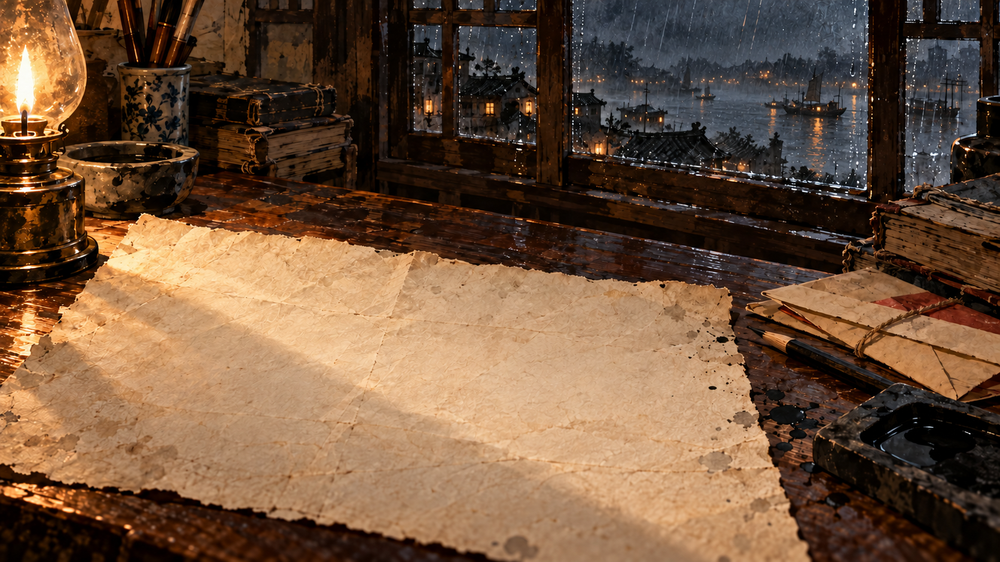

随身手记
每份纸，都有自己的来处
历史原页按原站公开规格加载。插画、演绎物件和现代试样分别说明，不替代原件。
把原页、题名与出处放在一起
1927 底本 · 1945 年修订
山河有信 · 纸上的接力
点场景中的物件与去处，与人物交谈；取得的线索可以在当前人物面前出示。排印桌上的选择会改变试样与后续回应。没有倒计时，也不为情感评分。
手记里的经历只供回看。回看时不能重选旧决定，回到现在可继续旅程。J 打开手记，L 打开来处；输入文字时快捷键不触发。
背景为 1938 年武汉文协的文化抗战。林青、陈师傅、周禾与玩家委托、试样、对白、交接和回声均为虚构演绎。史实、原页与短引语另有明确出处，不改变历史人物的实际行程和结局。
原信为研究转引的现代排印；地图为后期修订图。插画为 AI 辅助的当代重构，声音为现代程序音景。它们都不是历史影像或录音。原刊与照片正式公开使用的范围仍待确认。
本机保存，不上传，不调用在线生成对白。导出的旅程含你写的文字。旧版收藏与个人文字保留，重构后的故事从新的一页开始；旧原始记录可单独导出。
当前为完整故事的本地制作版。程序验证不代替真人时长、理解与共鸣、专业文史审读或竞赛评审。
确认后替换当前旅程。可先导出当前记录。
你的当代书写 · 本机保存
当代试样 · 实际取样快照